Welcome friend — I am always glad to see you here.
my dream company has only
useful♥product FOR USERS
Github
Inna Danylevska [Guru Quality♥Assurance @2017 - ...]
innadanylevska[skype]
innadanylevska@gmail.com[mail]
facebook.com/ITvolunteerInnaDanylevska/[fb]
#ITvolunteersFIRST&FRIENDs[hobby | Go to the Next Page Below]
intermediate & QA_manual_Expirience: 4 years[My QATwitterCourseFree: let's google each twitt]
Why should you work with me?
Provide product quality for users| Organize testing proccess | Make bug reports, check lists, test cases| With Trello, Mantis, Asana
[ [Delivering projects in time]
, I strive to build a long term relationship and be a trusted IT partner for my clients]
, I am constantly improving my processes on the back of customer feedback]
, My success defined by doing delivery using short cycles to get feedback earlier and correct the course of action if required] ];
My skills:
Manual QA web & mobile testing. PHP Selenium WebDriver, Mantis, TestLink, Proto.io, Trello.com, Bitly and others |
Building responsive websites using HTML5, CSS3, JS, jQuery, Bootstrap, Foundation, PHP, OOP, SOLID, Laravel, Postman, Angular, Jest(learning) |
Building RESTful API Application using Laravel and Postman. Blogs. Pet Project |
Bug fix[backend] |
Setup a website on hosting
Looking forward to collaborate with you ♥ Best wishes, Inna


 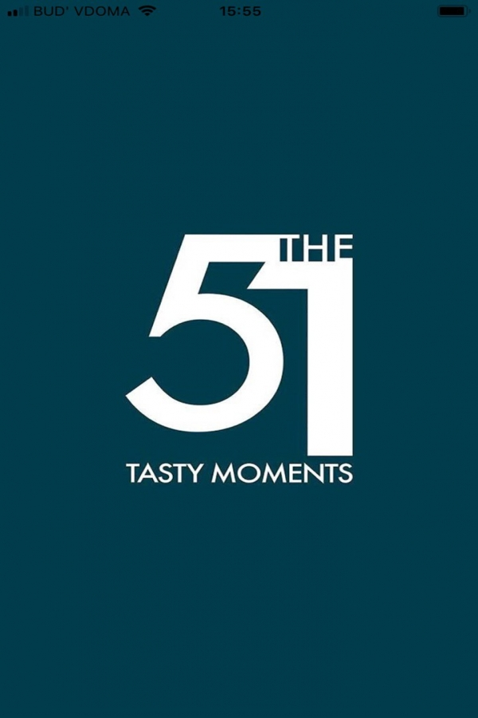
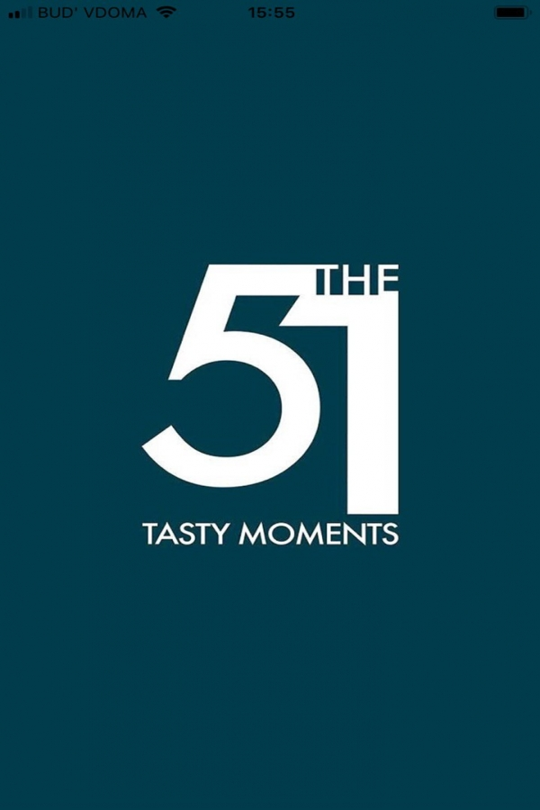
 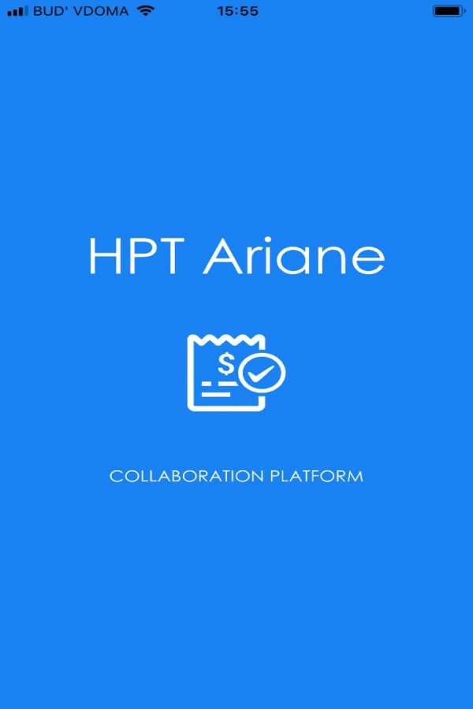
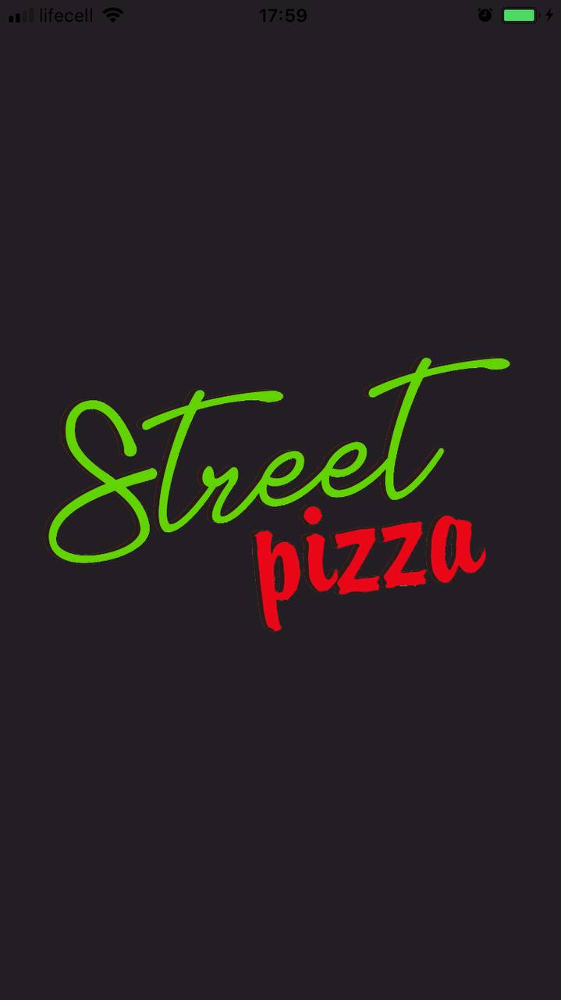
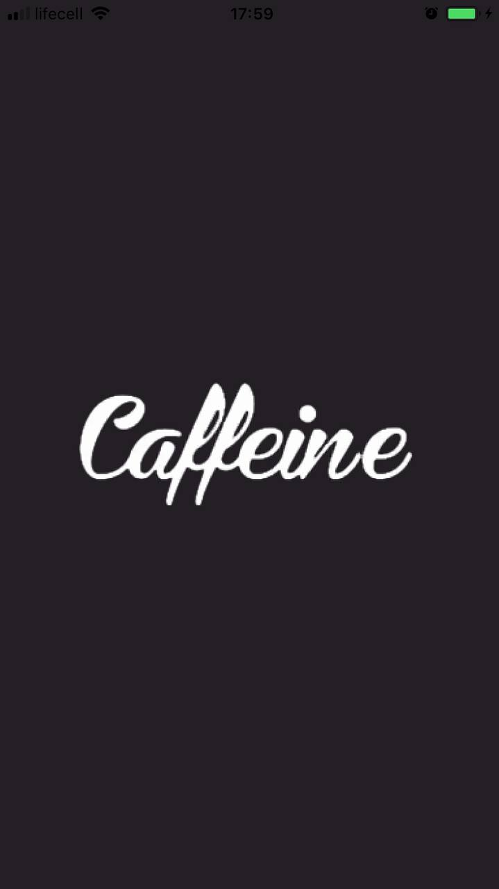
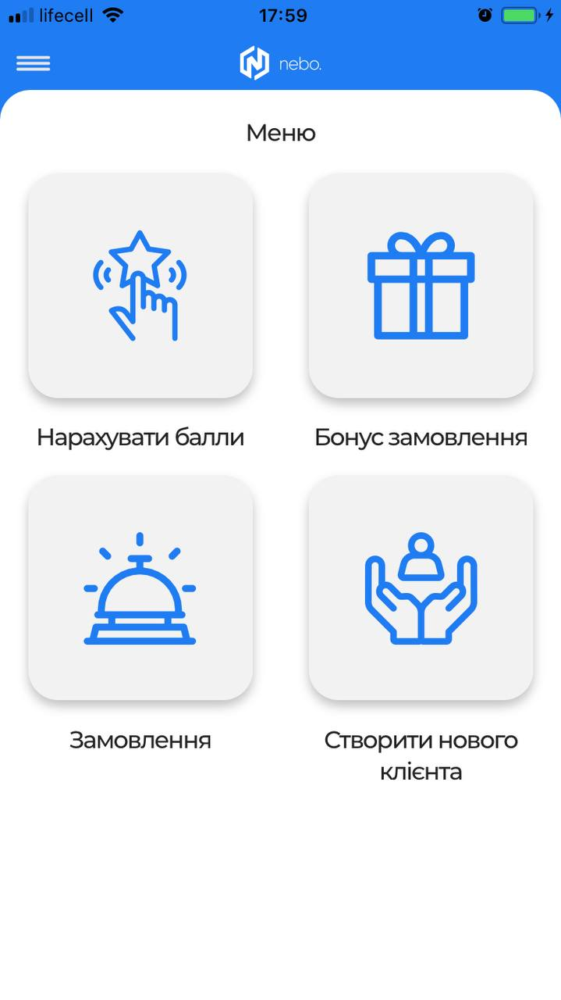
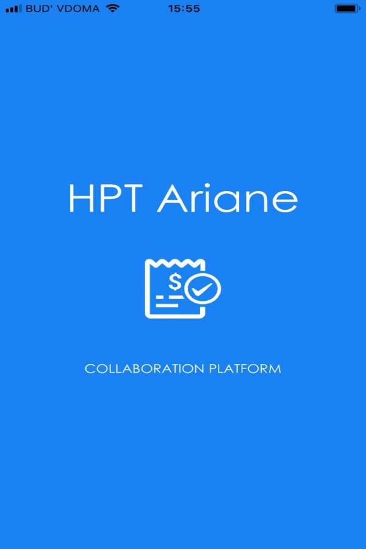
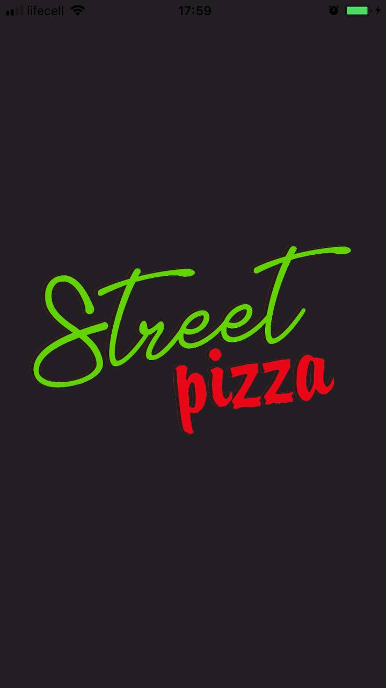
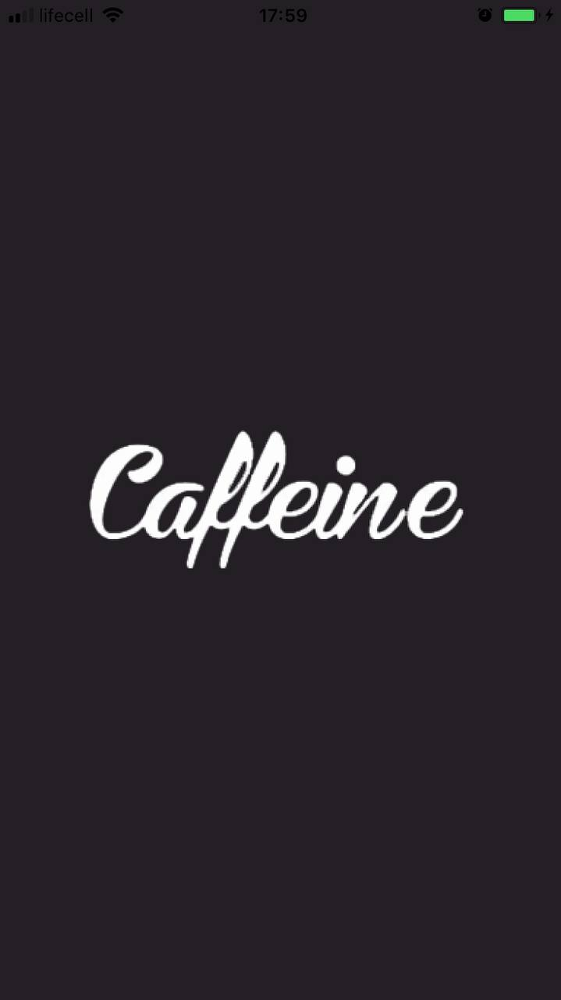
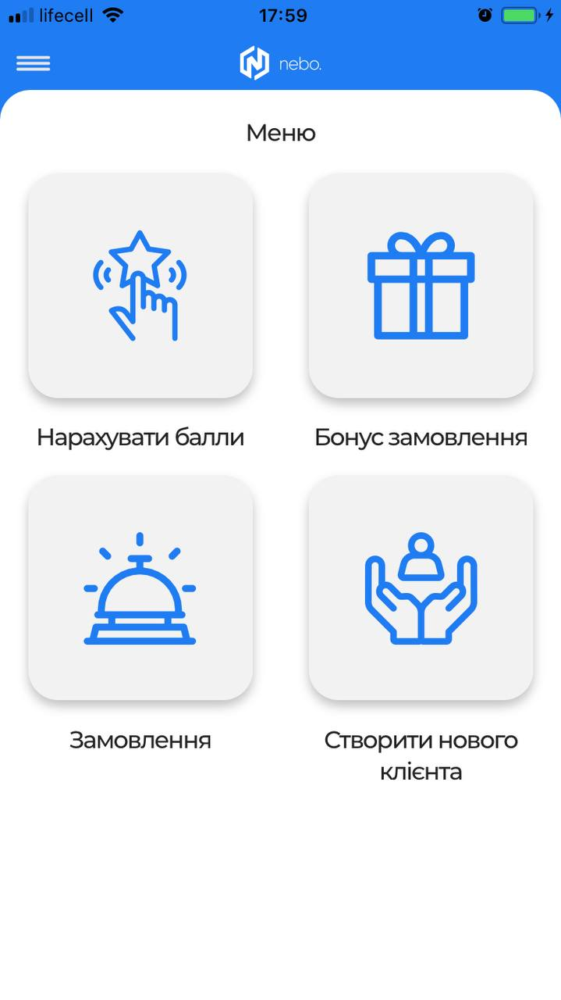
 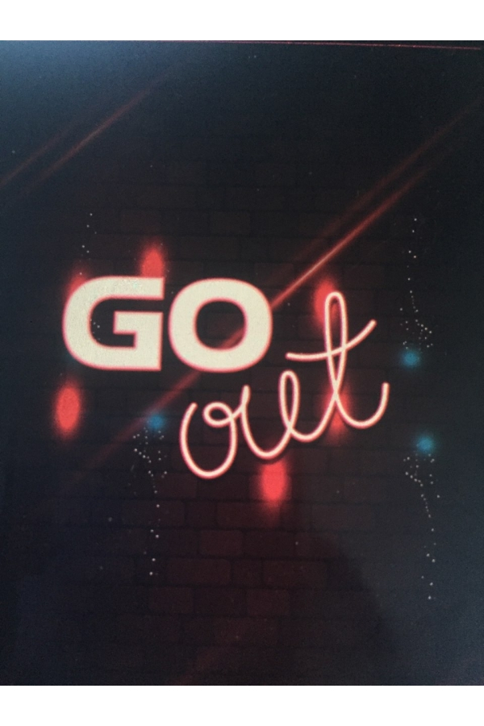
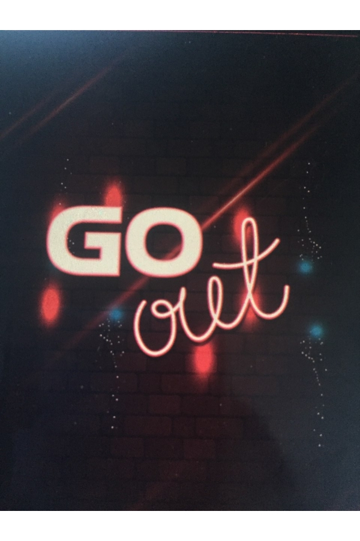